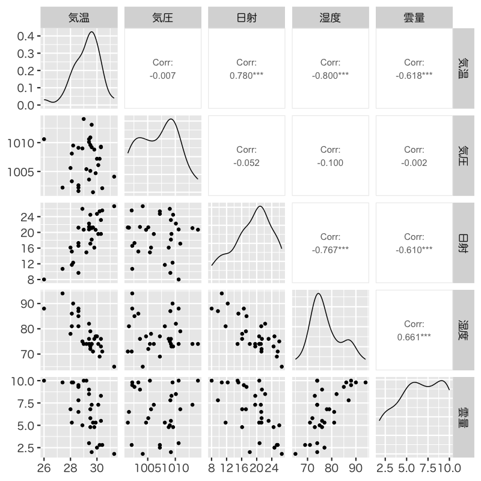
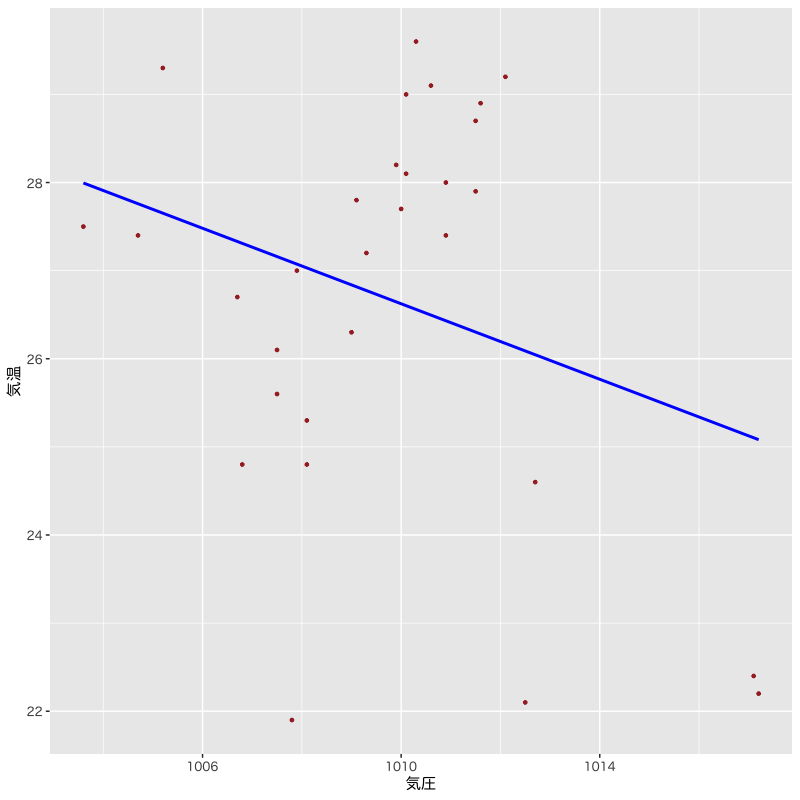
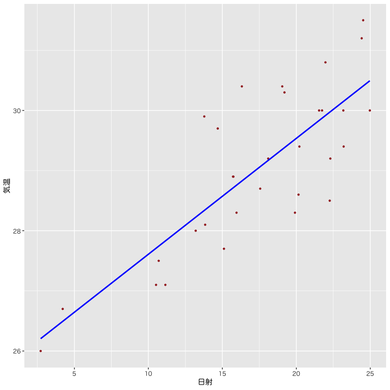
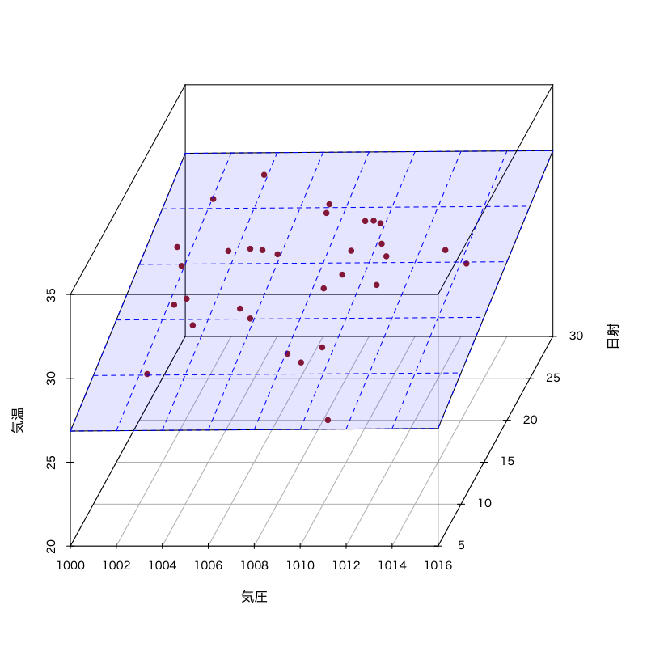
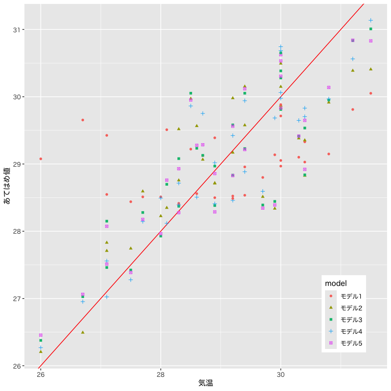

モデルの評価
(Press ? for help, n and p for next and previous slide)
村田 昇
回帰係数 \(\beta_{0},\beta_{1},\dotsc,\beta_{p}\) を用いた一次式
\begin{equation} y=\beta_{0}+\beta_{1}x_{1}+\dotsb+\beta_{p}x_{p} \end{equation}
誤差項 を含む確率モデルで観測データを表現
\begin{equation} y_i=\beta_{0}+\beta_{1} x_{i1}+\cdots+\beta_{p}x_{ip}+\epsilon_i \quad (i=1,\dotsc,n) \end{equation}
デザイン行列 (説明変数)
\begin{equation} X= \begin{pmatrix} 1 & x_{11} & x_{12} & \cdots & x_{1p} \\ 1 & x_{21} & x_{22} & \cdots & x_{2p} \\ \vdots & \vdots & \vdots & & \vdots \\ 1 & x_{n1} & x_{n2} & \cdots & x_{np} \end{pmatrix} \end{equation}
ベクトル (目的変数・誤差・回帰係数)
\begin{equation} \boldsymbol{y}= \begin{pmatrix} y_{1} \\ y_2 \\ \vdots \\ y_n \end{pmatrix},\quad \boldsymbol{\epsilon}= \begin{pmatrix} \epsilon_{1} \\ \epsilon_2 \\ \vdots \\ \epsilon_n \end{pmatrix},\quad \boldsymbol{\beta}= \begin{pmatrix} \beta_{0} \\ \beta_{1} \\ \vdots \\ \beta_{p} \end{pmatrix} \end{equation}
確率モデル
\begin{equation} \boldsymbol{y} =X\boldsymbol{\beta}+\boldsymbol{\epsilon}, \quad\boldsymbol{\epsilon}\sim\text{確率分布} \end{equation}
回帰式の推定 : 残差平方和 の最小化
\begin{equation} S(\boldsymbol{\beta}) =(\boldsymbol{y}-X\boldsymbol{\beta})^{\mathsf{T}} (\boldsymbol{y}-X\boldsymbol{\beta}) \end{equation}
解の条件 : 正規方程式
\begin{equation} X^{\mathsf{T}}X\boldsymbol{\beta} =X^{\mathsf{T}}\boldsymbol{y} \end{equation}
解の一意性 : Gram 行列 \(X^{\mathsf{T}}X\) が正則
\begin{equation} \boldsymbol{\hat{\beta}} = (X^{\mathsf{T}}X)^{-1} X^{\mathsf{T}}\boldsymbol{y} \end{equation}
残差 \(\boldsymbol{\hat{\epsilon}}=\boldsymbol{y}-\boldsymbol{\hat{y}}\) はあてはめ値 \(\boldsymbol{\hat{y}}\) と直交
\begin{equation} \boldsymbol{\hat{\epsilon}}^{\mathsf{T}}\boldsymbol{\hat{y}} =0 \end{equation}
回帰式は説明変数と目的変数の 標本平均 を通過
\begin{equation} \bar{y} = (1,\bar{\boldsymbol{x}}^{\mathsf{T}})\boldsymbol{\hat{\beta}}, \quad \bar{\boldsymbol{x}} =\frac{1}{n}\sum_{i=1}^n\boldsymbol{x}_i, \quad \bar{y} =\frac{1}{n}\sum_{i=1}^ny_i, \end{equation}
決定係数 (R-squared)
\begin{equation} R^2 = 1-\frac{\sum_{i=1}^n\hat{\epsilon}_i^2}{\sum_{i=1}^n(y_i-\bar{y})^2} \end{equation}
自由度調整済み決定係数 (adjusted R-squared)
\begin{equation} \bar{R}^2 = 1-\frac{\frac{1}{n{-}p{-}1}\sum_{i=1}^n\hat{\epsilon}_i^2} {\frac{1}{n{-}1}\sum_{i=1}^n(y_i-\bar{y})^2} \end{equation}
データの一部
| 日付 | 気温 | 降雨 | 日射 | 降雪 | 風向 | 風速 | 気圧 | 湿度 | 雲量 |
| 2022-08-01 | 30.6 | 0 | 24.53 | 0 | SSE | 2.8 | 1010.1 | 72 | 8.8 |
| 2022-08-02 | 31.6 | 0 | 24.78 | 0 | SSE | 2.5 | 1008.8 | 71 | 9.8 |
| 2022-08-03 | 31.5 | 0 | 21.24 | 0 | SSE | 2.3 | 1005.1 | 75 | 7.3 |
| 2022-08-04 | 24.6 | 18 | 3.46 | 0 | NE | 2.7 | 1006 | 89 | 10 |
| 2022-08-05 | 23.8 | 0 | 7.65 | 0 | NE | 2.9 | 1006.1 | 83 | 9.8 |
| 2022-08-06 | 25.2 | 0 | 17.06 | 0 | SSE | 2.4 | 1008.1 | 73 | 10 |
| 2022-08-07 | 27.6 | 0 | 14.45 | 0 | SSE | 2.2 | 1009.3 | 80 | 8.3 |
| 2022-08-08 | 29.8 | 0 | 22.52 | 0 | S | 4.5 | 1008.5 | 75 | 4.8 |
| 2022-08-09 | 30.9 | 0 | 25.5 | 0 | S | 5.5 | 1006.9 | 69 | 6.8 |
| 2022-08-10 | 30.5 | 0 | 25.99 | 0 | S | 5.3 | 1007.2 | 70 | 6 |
| 2022-08-11 | 29.5 | 0 | 22.9 | 0 | S | 5.4 | 1007.5 | 75 | 6 |
| 2022-08-12 | 28.3 | 2 | 15.36 | 0 | S | 5.8 | 1007.5 | 81 | 9.8 |
| 2022-08-13 | 25.5 | 47.5 | 4.53 | 0 | S | 4.8 | 1005.6 | 94 | 10 |
| 2022-08-14 | 28.2 | 0 | 16.28 | 0 | SSE | 2.6 | 1003 | 84 | 8.8 |
| 2022-08-15 | 29.4 | 0 | 18.65 | 0 | S | 2.5 | 1003.4 | 78 | 8.8 |
関連するデータの散布図

Figure 1: 散布図
モデル1の推定結果

Figure 2: モデル1
モデル2の推定結果

Figure 3: モデル2
モデル3の推定結果

Figure 4: モデル3
観測値とあてはめ値の比較

Figure 5: モデルの比較
決定係数(\(R^{2}\), Adjusted \(R^{2}\))
| 目的変数 | |||||
| 気温 | |||||
| モデル1 | モデル2 | モデル3 | モデル4 | モデル5 | |
| 気圧 | -0.178 (0.127) | -0.223 (0.068) | -0.214 (0.067) | -0.242 (0.068) | |
| 日射 | 0.297 (0.041) | 0.306 (0.036) | 0.366 (0.056) | 0.348 (0.045) | |
| 湿度 | 0.071 (0.051) | ||||
| 雲量 | 0.238 (0.161) | ||||
| Constant | 206.535 (127.430) | 22.969 (0.690) | 247.477 (68.433) | 231.843 (68.254) | 263.717 (67.941) |
| R2 | 0.064 | 0.641 | 0.741 | 0.758 | 0.760 |
| Adjusted R2 | 0.031 | 0.628 | 0.722 | 0.731 | 0.733 |
さまざまな表現
\begin{align} \boldsymbol{\hat{y}} &=X\boldsymbol{\hat{\beta}}\\ &\qquad(\boldsymbol{\hat{\beta}}=(X^{\mathsf{T}}X)^{-1}X^{\mathsf{T}}\boldsymbol{y}を代入)\\ &=X(X^{\mathsf{T}}X)^{-1}X^{\mathsf{T}}\boldsymbol{y} && (A) \\ &\qquad(\boldsymbol{y}=X\boldsymbol{\beta}+\boldsymbol{\epsilon}を代入)\\ &=X(X^{\mathsf{T}}X)^{-1}X^{\mathsf{T}}X\boldsymbol{\beta} +X(X^{\mathsf{T}}X)^{-1}X^{\mathsf{T}}\boldsymbol{\epsilon}\\ &=X\boldsymbol{\beta} +X(X^{\mathsf{T}}X)^{-1}X^{\mathsf{T}}\boldsymbol{\epsilon} && (B) \\ \end{align}
残差と誤差の関係
\begin{align} \boldsymbol{\hat{\epsilon}} &=\boldsymbol{y}-\boldsymbol{\hat{y}}\\ &=\boldsymbol{\epsilon} -X(X^{\mathsf{T}}X)^{-1}X^{\mathsf{T}} \boldsymbol{\epsilon}\\ &=\bigl(I -X(X^{\mathsf{T}}X)^{-1}X^{\mathsf{T}} \bigr) \boldsymbol{\epsilon} && (C) \\ \end{align}
定義
\begin{equation} H= X(X^{\mathsf{T}}X)^{-1}X^{\mathsf{T}} \end{equation}
ハット行列 \(H\) による表現
\begin{align} \boldsymbol{\hat{y}} &=H\boldsymbol{y}\\ \boldsymbol{\hat{\epsilon}} &=(I-H)\boldsymbol{\epsilon} \end{align}
対角成分 (テコ比; leverage) は観測データが自身の予測に及ぼす影響の度合を表す
\begin{equation} \hat{y}_{j} = (H)_{jj}y_{j} + \text{(それ以外のデータの寄与)} \end{equation}
推定量と誤差の関係
\begin{align} \boldsymbol{\hat{\beta}} &=(X^{\mathsf{T}}X)^{-1}X^{\mathsf{T}}\boldsymbol{y}\\ &=(X^{\mathsf{T}}X)^{-1}X^{\mathsf{T}}(X\boldsymbol{\beta}+\boldsymbol{\epsilon}) \\ &=(X^{\mathsf{T}}X)^{-1}X^{\mathsf{T}}X\boldsymbol{\beta} +(X^{\mathsf{T}}X)^{-1}X^{\mathsf{T}}\boldsymbol{\epsilon}\\ &=\boldsymbol{\beta} +(X^{\mathsf{T}}X)^{-1}X^{\mathsf{T}}\boldsymbol{\epsilon} \end{align}
正規分布の重要な性質 (再生性)
正規分布に従う独立な確率変数の和は正規分布に従う
推定量は以下の多変量正規分布に従う
\begin{align} \mathbb{E}[\boldsymbol{\hat{\beta}}] &=\mathbb{E}[\boldsymbol{\beta} +(X^{\mathsf{T}}X)^{-1}X^{\mathsf{T}}\boldsymbol{\epsilon}] =\boldsymbol{\beta}\\ \mathrm{Cov}(\boldsymbol{\hat{\beta}}) &=\mathbb{E}[ (\boldsymbol{\hat{\beta}}-\boldsymbol{\beta}) (\boldsymbol{\hat{\beta}}-\boldsymbol{\beta})^{\mathsf{T}}] =\sigma^{2}(X^{\mathsf{T}}X)^{-1} \end{align}\begin{equation} \boldsymbol{\hat{\beta}} \sim \mathcal{N}(\boldsymbol{\beta},\sigma^{2}(X^{\mathsf{T}}X)^{-1}) \end{equation}
通常 \(\sigma^{2}\) は未知，必要な場合には不偏分散で代用
\begin{equation} \hat{\sigma^{2}} =\frac{S}{n{-}p{-}1} =\frac{1}{n{-}p{-}1}\boldsymbol{\hat{\epsilon}}^{\mathsf{T}}\boldsymbol{\hat{\epsilon}} =\frac{1}{n{-}p{-}1}\sum_{i=1}^n\hat{\epsilon}_i^2 \end{equation}
正規乱数を用いた線形単回帰モデル
set.seed(987) # 乱数のシード値を設定
x_obs <- tibble(x0 = 1, x1 = c(1,3,5,7)) # 説明変数の観測値
epsilon <- rnorm(nrow(x_obs), sd = 0.5) # 誤差項の生成
beta <- c(2, -3) # 回帰係数
toy_data <- x_obs |> # 目的変数の観測値を追加
mutate(y = as.vector(as.matrix(x_obs) %*% beta) + epsilon)
toy_lm <- lm(y ~ x1, data = toy_data) # 回帰係数の推定
coef(toy_lm) # 回帰係数の取得
summary(toy_lm) # 分析結果の概要の表示
実験のためのコードは以下のようになる
mc <- 5000 # 実験回数を指定
mc_trial <- function() { # 1回の試行を行うプログラム
## 乱数生成と推定の処理
return(返り値)}
mc_data <-
replicate(mc, mc_trial()) |> # Monte-Carlo実験
t() |> as_tibble() # 転置(関数t())してデータフレームに変換
#' 適切な統計・視覚化処理 (下記は例)
mc_data |>
summarise(across(everything(), var)) # 各列の分散の計算
ggpairs(mc_data) # 散布図行列の描画
tibble(x = mc_data[[k]]) |> # k列目のベクトルで新しいデータフレームを作成
ggplot(aes(x = x)) + geom_histogram() # k列目のデータのヒストグラム
以下のモデルに従う人工データを生成する
説明変数の観測データ :
\begin{equation} \{1, 20, 13, 9, 5, 15, 19, 8, 3, 4\} \end{equation}確率モデル :
\begin{equation} y=-1+2\times x + \epsilon, \quad \epsilon\sim\mathcal{N}(0,2) \end{equation}
決定係数 (R-squared):
(回帰式で説明できるばらつきの比率)
\begin{equation} R^2 = 1-\frac{\sum_{i=1}^n\hat{\epsilon}_i^2}{\sum_{i=1}^n(y_i-\bar{y})^2} \end{equation}
自由度調整済み決定係数 (adjusted R-squared):
(決定係数を不偏分散で補正)
\begin{equation} \bar{R}^2 = 1-\frac{\frac{1}{n{-}p{-}1}\sum_{i=1}^n\hat{\epsilon}_i^2} {\frac{1}{n{-}1}\sum_{i=1}^n(y_i-\bar{y})^2} \end{equation}
\(\boldsymbol{\hat{\beta}}\) の分布 : \(p{+}1\) 変量正規分布
\begin{equation} \boldsymbol{\hat{\beta}} \sim \mathcal{N}(\boldsymbol{\beta},\sigma^{2}(X^{\mathsf{T}}X)^{-1}) \end{equation}
\(\hat{\beta}_j\) の分布 : 1変量正規分布
\begin{equation} \hat{\beta}_{j} \sim \mathcal{N}(\beta_{j},\sigma^{2}((X^{\mathsf{T}}X)^{-1})_{jj}) =\mathcal{N}(\beta_{j},\sigma^{2}\zeta_{j}^{2}) \end{equation}
標準誤差 (standard error) : \(\hat{\beta}_j\) の標準偏差の推定量
\begin{equation} \mathrm{s.e.}(\hat{\beta}_{j}) = \hat{\sigma}\zeta_j = \sqrt{\frac{1}{n{-}p{-}1}\sum_{i=1}^n\hat{\epsilon}_i^2} \cdot \sqrt{((X^{\mathsf{T}}X)^{-1})_{jj}} \end{equation}
人工データを用いて標準誤差と真の誤差を比較する
#' 標準誤差は以下のようにして取り出せる
data_lm <- lm(formula, data)
summary(data_lm)$coefficients # 係数に関する情報はリストの要素として保管されている
summary(data_lm)$coefficients[,2] # 列番号での指定
summary(data_lm)$coef[,"Std. Error"] # 列名での指定．coef と省略してもよい
回帰係数の分布 に関する定理
\(t\)統計量 (\(t\)-statistic)
\begin{equation} % \text{(t統計量)}\quad t = \frac{\hat{\beta}_j-\beta_j}{\mathrm{s.e.}(\hat{\beta}_{j})} = \frac{\hat{\beta}_j-\beta_j}{\hat{\sigma}\zeta_{j}} \end{equation}は自由度 \(n{-}p{-}1\) の \(t\)分布に従う
\(p\)値 : 確率変数の絶対値が \(|t|\) を超える確率
\begin{equation} \text{(\(p\)値)} = 2\int_{|t|}^\infty f(x)dx \quad\text{(両側検定)} \end{equation}
人工データを用いて\(t\)統計量の分布を確認する
#' t統計量とそのp値は以下のようにして取り出せる
data_lm <- lm(formula, data)
summary(data_lm)$coef[,c("t value","Pr(>|t|)")] # 列名での指定
summary(data_lm)$coef[,3:4] # 列番号での指定
ばらつきの比 に関する定理:
\(\beta_{1}=\dotsb=\beta_{p}=0\) ならば \(F\)統計量 (\(F\)-statistic)
\begin{equation} % \text{(F統計量)}\quad F= \frac{\frac{1}{p}S_{r}}{\frac{1}{n{-}p{-}1}S} % =\frac{\frac{1}{p}\sum_{i=1}^n(\hat{y}_i-\bar{y})^2} % {\frac{1}{n{-}p{-}1}\sum_{i=1}^n(y_i-\hat{y}_i)^2} =\frac{n{-}p{-}1}{p}\frac{R^2}{1-R^2} \end{equation}は自由度 \(p,n{-}p{-}1\) の \(F\)分布に従う
\(p\)値 : 確率変数の値が \(F\)を超える確率
\begin{equation} \text{(\(p\)値)} = \int_{F}^\infty f(x)dx \quad\text{(片側検定)} \end{equation}
人工データを用いて\(F\)統計量の分布を確認しなさい
#' F統計量とその自由度は以下のようにして取り出せる
data_lm <- lm(formula, data)
summary(data_lm)$fstat
summary(data_lm)$fstatistic # 省略しない場合
回帰モデルのあてはまりを視覚的に評価
などが用意されている
#' 関数 stats::lm() による推定結果の診断プロット
tw_lm6 <- lm(temp ~ press + solar + rain, data = tw_subset)
#' 関数 ggfortify::autoplot() を利用する
#' 必要であれば 'install.packages("ggfortify")' を実行
library(ggfortify)
autoplot(tw_lm6)
#' 診断プロットは1から6まで用意されており 1,2,3,5 がまとめて表示される
#' 個別に表示する場合は 'autoplot(tw_lm6, which = 1)' のように指定する
#' 詳細は '?ggfortify::autoplot.lm' を参照